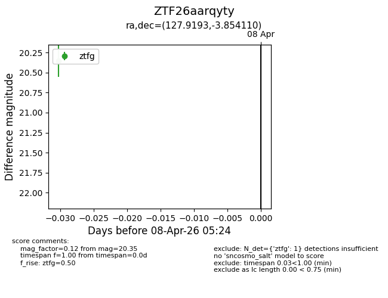
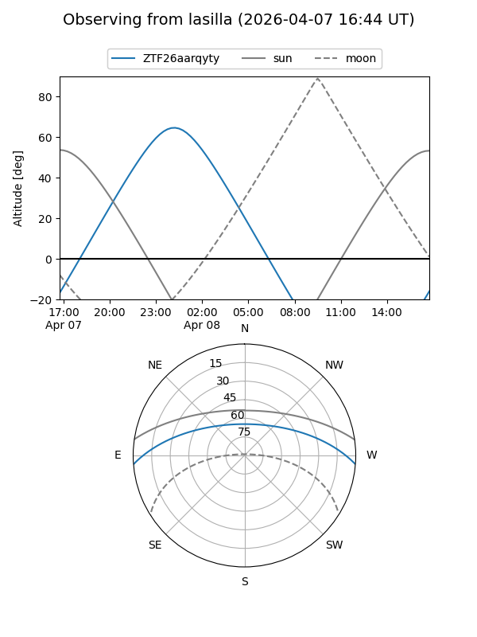
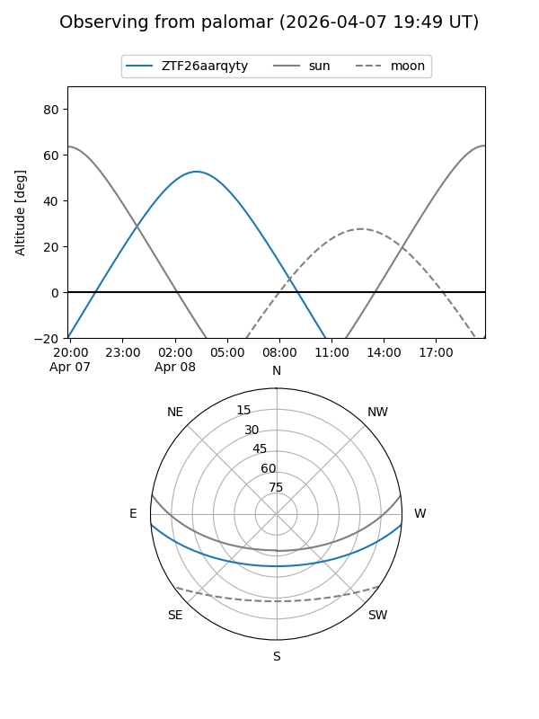

ZTF26aarqyty
Target ZTF26aarqyty at 2026-04-08 05:29
Aliases and brokers:
FINK: link
Lasair: link
ALeRCE: link
alt names
ZTF26aarqyty (ztf,fink_ztf)
Coordinates:
equatorial (ra, dec) = 127.9193,-3.85411
equatorial (HMS+DMS) = 08:31:40.64,-03:51:14.80
galactic (l, b) = (228.5421,+20.21021)
Flags:
Photometry:
last ztfg=20.35
1 ztfg detections
Lightcurve

Visibility


Additional plots